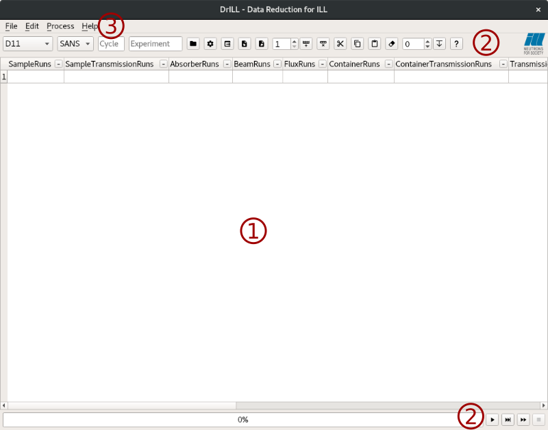
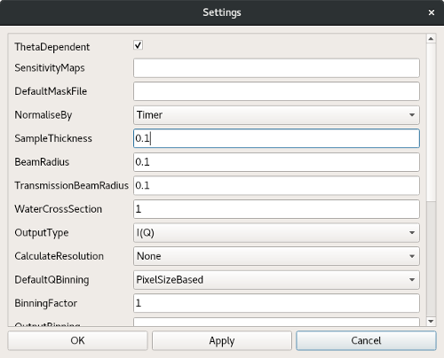
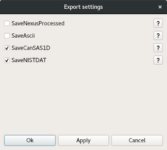

DrILL interface#
DrILL stands for Data Reduction at ILL. It provides an easy to use interface for the reduction of data measured on different ILL instruments. Here are the currently supported instruments:
D11: SANS
D16: SANS, SANS Sample scan
D17: Reflectometry
D22: SANS
D33: SANS
FIGARO: Reflectometry
D2B: Powder diffraction
D20: Powder diffraction
The interface is accessible through the Workbench menu bar: Interfaces -> ILL -> DrILL.
n.b. To be able to use the interface, one has to set the default facility to ILL first. Open the settings through the workbench menu (File -> Settings). In the General tab, set the facility to ILL.
Interface overview#
The DrILL main window is composed of different parts:

- spreadsheet like table (1)
This is the main part of the DrILL interface. Generally one row represents one sample measured at one or more distances (SANS) or angles (Reflectometry). There is no limit on the number of the different configurations. It is used to provide filenames and options to the reduction algorithm. The state of the table is reset when the instrument and/or the acquisition mode is changed.
- tool buttons (2)
In two different places. At the top of the table, these buttons facilitate the table filling and provide the instrument and acquisition mode selections. At the bottom, they are linked to the processing actions.
- menu bar (3)
Most of the actions are accessible through this menu bar.
A global settings dialog is also accessible through the menu or its dedicated tool button. This dialog contains more options for the reduction algorithm.

Data reduction algorithm#
The underlying data reduction algorithm depends on the experimental technique. Its selection is triggered when one has selected the instrument and the acquisition mode.
To get further information on the currently supported algorithms:
SANS: SANSILLAutoProcess and SANSILLParameterScan
Reflectometry: ReflectometryILLAutoProcess
Powder diffraction: PowderILLDetectorScan and PowderILLParameterScan
Global settings#
Global settings are grouped in a dedicated dialog. This dialog is accessible in the DrILL menu (File -> Settings) or with the dedicated tool button. This dialog is dynamically linked to the selected algorithm, therefore to the instrument and acquisition mode. It contains a set of options that will be used for all the samples.
When opening the dialog for the first time, the settings are set to their default value (see the corresponding algorithm documentation). After modifying the settings, one can save or discard them with the usual three buttons ‘ok’, ‘apply’ or ‘cancel’.
Each time a setting is changed in the dialog, its value is checked. A wrong value will turn red the corresponding field. A tooltip explaining the error is displayed when the mouse is over that red field. A single red field prevents the settings from being saved.
Table filling#
When selecting the instrument and the acquisition mode, the table is updated with the needed column headers. To obtain information about a column, a tooltip is displayed when moving the mouse over the corresponding header. To facilitate filling, columns can be collapsed (button in the header), hidden (right click or menu bar) and their order can be changed by drag-and-drop.
Each cell can be edited manually or filled programmatically by using some of the tool buttons.
- cut-copy-paste
Cell or row contents can be copied/cut and then pasted in other cells. These actions are accessible through the dedicated button, the menu or the usual keyboard shortcuts. Copying or cutting a single cell and pasting it in several cells will repeat the value.
- increment fill
An automatic filling mechanism facilitates the filling of the table by incrementing/decrementing the numors over selected cells. To do so, the user has to select several cells that he wants to fill, choose an increment value and press the fill tool button. The value in the first cell (the one with the lowest row and column index) will be incremented and written in the following ones.
DEFAULT is a special value. During data reduction, it will be replaced with the default value of this parameter defined in the algorithm. It acts like an empty cell but this allows to override a master sample parameter with the default value (see below).
For all algorithms, the last column of the table is always labelled
CustomOptions. It makes it possible to override a global parameter for
the current row only. It should contain a semicolon separated list of key value
pairs. For example, one can set SampleThickness=0.2;ThetaDependant=False
and override the global values of these parameters for that specific row.
When filling the table, all parameters (including the custom options) are checked for validity. When a value is not valid, the cell turns red and a tooltip (visible when the mouse moves over the cell) explains the error. A single red cell prevent the processing of the concerned row.
Groups#
To avoid entering exactly the same value several times in the table, it is also possible to create groups of samples. Within a group, a master sample can be designated. The values of the parameters of the master sample will be used when processing all rows in the group.
Paramaters can still be overriden manually whithin a group by entering a sample specific value in the table. The special DEFAULT value can be use to override a master sample parameter with its default value. The priority for the parameter values is as follow:
sample > master sample > global settings
Example:
Sample |
Group |
parameter 1 |
parameter 2 |
|---|---|---|---|
1(master) |
g1 |
v1 |
v2 |
2 |
g1 |
||
3 |
g1 |
v2’ |
|
4 |
g1 |
DEFAULT |
For the processing of sample 2: parameter1=v1 and parameter2=v2
For the processing of sample 3: parameter1=v1 and parameter2=v2’
For the processing of sample 4: parameter1=v1 and parameter2 will use the algorithm default value
To group samples, one has to select them (at least one cell per row) and press Ctrl + G or use the context menu. To set a row as master, one has to select it (again, one cell is sufficient) and press Ctrl + M or use the context menu. Grouped samples will appear with a specific label in the table. The master of a group will have a bold label. There can be only one master row per group, if a second row is selected as the master row, it will replace the previous one. One can also add a sample to an existing group (using the context menu) or ungroup samples by selecting them and pressing Ctrl + Alt + G or using the context menu.
Processing#
Processing control is made through the menu (Process) or the tool buttons at the bottom of the table. One can start the processing (of selected or all row(s)) or abort a running processing.
During processing, the table is in read-only mode. The active row(s) turn yellow, the processed ones turn green and the row(s) for which the processing failed turn red. The progress bar is also updated.
At the end of the processing, if any error occurs, a popup lists the concerned row(s). To get further information about the errors, one has to look into the Mantid logs.
Automatic data export#
After the processing, the export of reduced data is automatically triggered. The configuration of this mechanism is done via the export dialog that can be opened from the tool bar.

For each acquisition mode, a list of adapated algorithms will be displayed in that dialog. Some of them are activated by default but the user is free to select the ones he wants. All checked algorithms will be applied on all output workspaces of all processed rows. The exported files are saved in the Mantid default save directory with an extension that is defined by the algorithm (if no default save directory is provided, there will be no export). If the algorithm is not adapted to the data, it will be skipped. For further information, the documentation of each algorithm can be obtained using the help button associated to it in the dialog.
Import and export as Rundex file#
Rundex file (*.mrd) is a human readable text file that represents the state of the interface in JSON format. By using the appropriate tool button or the menu bar (File -> Save… or Load…) one can export or import a Rundex file.
When saving, the global settings, all the samples and some of the visual setup are exported in the rundex file (i.e. the collapsed columns, the hidden columns…). Symmetrically, the load action imports all these data in the current DrILL session and one will recover the interface in the same state as it was previously saved.
Category: Interfaces